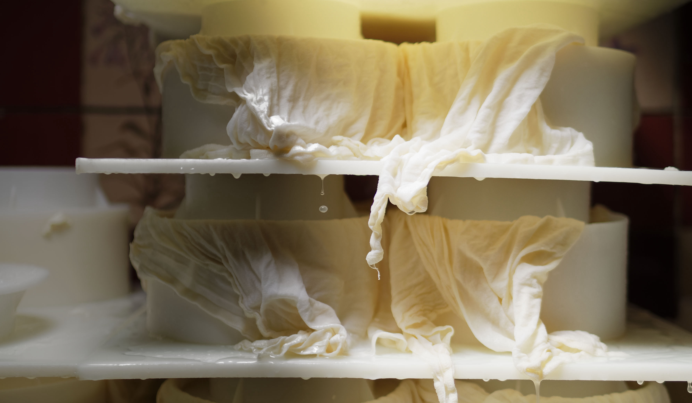

La maturation et l’emprésurage du lait
Le décaillage et le brassage
Le soutirage du caillé
Le moulage

Guillaume SAUVAGE, maître-fromager au caractère affirmé est aujourd’hui l’héritier des secrets de fabrication de la Tome de Cambrai dans toutes ses étapes de fabrication et d’affinage.
Véritable patrimoine familial, c’est la maman de Guillaume et Grégoire, Anne SAUVAGE, qui a créée la Tome de Cambrai en 1990.
Depuis, ensembles, ils ont développé la gamme de nos fromages fermiers réalisés avec le bon lait de nos vaches.
Découvrez les différentes étapes de fabrication de la Tome de Cambrai :
La première étape consiste à ensemencer le lait (processus d’acidification qui doit être régulé en fonction de la qualité du lait) et à ajouter de la présure (caillette de veau) pour permettre au lait de coaguler.
Après une quarantaine de minutes, Guillaume découpe le caillé en gros grains à l’aide d’un outil appelé lyre et brasse pendant presque une heure à la force des bras …
Pour la troisième étape, il transvase le tout dans un bac de pré-pressage où le caillé sera libéré du lactosérum. Une fois égoutté, Guillaume découpe dans la masse des « pains » de caillé.
Chaque pain de caillé rejoint alors son moule.
L’étape du pressage est effectuée mécaniquement, par empilement. C’est ainsi que notre Tome de Cambrai « prend forme ».
Après être passé en saumure (eau chargée en sel), les fromages sont lavés et brossés à la bière une fois par semaine. C’est Alain qui est en charge de cette étape qui va permettre à la croûte de se former et au fromage de prendre tout son caractère.
Pour cette dernière étape, les Tomes de Cambrai séjournent dans nos caves sur des grilles d’affinage, à température constante entre 10 et 12°C. Une fois par semaine, pendant au minimum 7 à 8 semaines, « Sophie » va retourner et brosser chaque tome pour que la croûte prenne un bel aspect rustique et sa belle couleur orangée. Ces soins et la surveillance experte du Maître de Cave vont permettre à notre Tome de Cambrai de développer ses arômes et son caractère unique.